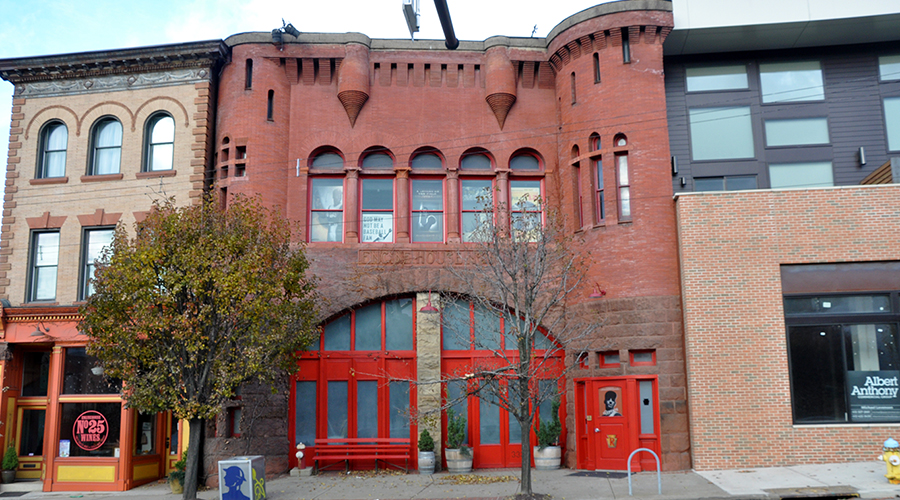
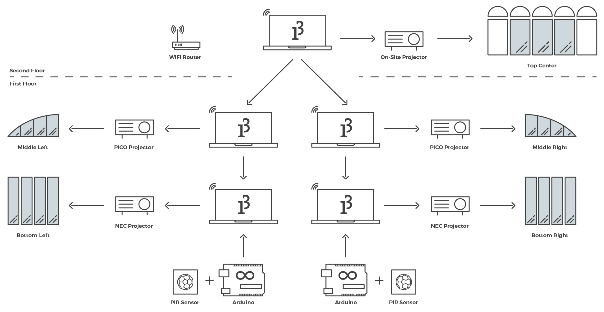

Colour Drop 21
Carnegie Mellon University
Role: Lead Software Developer
The public installation was an interactive homage to Roberto Clemente, a former baseball player for the Pittsburgh Pirates.
I developed the architecture of the network and coded out most of the visualisations.
Brief
The installation was the final project for the Reactive Spaces and Media Architecture class at CMU. We were tasked with designing, building and exhibiting a location specific, interactive art installation. We choose to design for the Clemente Museum.
Team: Lumi Barron, MacKenzie Cherban and Jonathan K. Loeb
Location
Clemente Museum, Pittsburgh, PA
The Museum is in the Lawrenceville neighbourhood of Pittsburgh, near the intersection of Penn Ave. and Butler Street. It occupies the old Engine House no. 25 and in addition to being a museum honouring the former Pittsburgh Pirates player, Roberto Clemente, it is also home to Rieder Photography. The owner, Duane Rieder, was extremely encouraging and pivotal in our process.

Ideation
The project incorporated the spirit of the holiday season and the character of the museum. The memorabilia and photographs inspired us to create a projection installation using iconic images of Clemente, which was appreciated by Duane, the owner.
First Prototype
The windows of the building were inspirational and we went forward with the idea of using the main windows of the 2 floors in the installation.
Hardware Testing
Input
To incorporate interaction, we tried to use computer vision which failed due to poor camera visibility and intermittent network connectivity.
Output
We tested various outputs like LEDs, snowblowers and flood lights but decided on only using projections.
Graphics Testing
Processing was the language of choice for this project. All the animation and graphics were created in Processing 3.3.6 .
Final Installation
We projected through both the first and second floor windows of the museum to create a cohesive multi-level projection. The top level highlights a collection of photos gathered by the museum over time, bringing them to life with vibrant colours. As Clemente’s images change, the colours influence the projections below, creating an abstract and dynamic snow fall for pedestrians.
As people walk by or approach the windows, a flurry of snow particles is thrown into the “air,” allowing people to contribute to the project. These bursts were intentionally programmed with an upward movement and lighter colour, so that anyone interacting would know they were contributing to the projection.
Network
Visualisation
Setup
The installation was created by placing a number of projectors throughout the space. The second storey used an existing on-site projector, while on the first floor 4 additional projectors were used—two pico projectors for the rounded windows and two larger NEC projector aimed at the bottom row of windows.
Each projector was controlled by a laptop running Processing and used OSC communication to talk to one another over a wireless network. For the pedestrian interaction we chose to use two PIR sensors attached at ground level to detect anyone passing by.